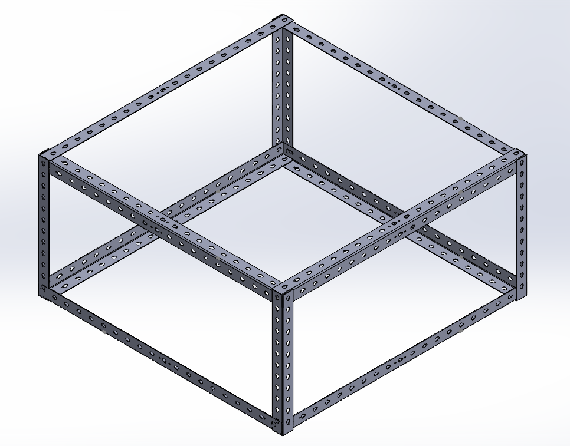

The furnace base insulation project involved designing and constructing a durable steel base and mould to contain a reinforced insulation layer made of castable refractory and wire mesh. This innovative design improved thermal efficiency and reduced metal melting time by 30%, showcasing advanced fabrication techniques like angle grinding, plasma cutting, rolling, and MIG welding.


The lightweight truss bridge project focused on designing and fabricating a structurally efficient bridge by replacing traditional tension members with strings, achieving a significant weight reduction from 170g to 140g. Advanced analysis techniques, such as truss and buckling load factor calculations, ensured stability, while 3D-printed hollow members optimized material usage and overall weight reduction.

The expandable and retractable truss bridge project involved designing and constructing a compact, deployable bridge using a scissor mechanism. The bridge could contract to fit within a 100mm cube and expand to span over 300mm, supporting loads of up to 4kg. The innovative design optimized portability and structural efficiency, utilizing precise fabrication techniques and iterative improvements to meet performance requirements.

The simulated traffic light system project involved designing and implementing a Python-based control system integrated with hardware components on breadboards. The system utilized sensors, such as ultrasonic and thermistors, to dynamically adjust traffic light behavior based on environmental and vehicular conditions. Additional features included a failure alert subsystem, a maintenance mode with PIN-based access, and seven-segment displays for real-time data visualization, showcasing effective software-hardware integration.

The cloth hanger design and build project involved creating a durable and functional hanger using steel. The hooks were precisely fabricated through plasma cutting and refined with a drill press and bench grinder to achieve a smooth surface finish. The project combined strength, precision, and aesthetics to deliver a high-quality final product.

The shipping crate project involved fabricating a sturdy crate to transport car parts for the Shell Eco-Marathon competition in Indonesia. Steel crates were assembled to form the frame using fabrication techniques such as abrasive cutoff saws for cutting, angle grinding for smoothing edges, and drilling for adjustments, ensuring a secure and reliable design.

The project involved designing and building a steering knuckle and motor mount for the car used in the Shell Eco-Marathon competition in Indonesia. The steering knuckle was engineered to precisely position the brake caliper at the center of the brake disc for optimal braking efficiency, while the motor mount securely held the motor in place. Both components were designed in SolidWorks and manufactured from aluminum using CNC machining for high precision and durability.

The mini wind tunnel project involved designing a compact and functional wind tunnel using SolidWorks and fabricating it for aerodynamic testing. The design focused on optimizing airflow control and creating a scalable testing environment for small prototypes, ensuring accurate and reliable performance analysis.
{kind=link}